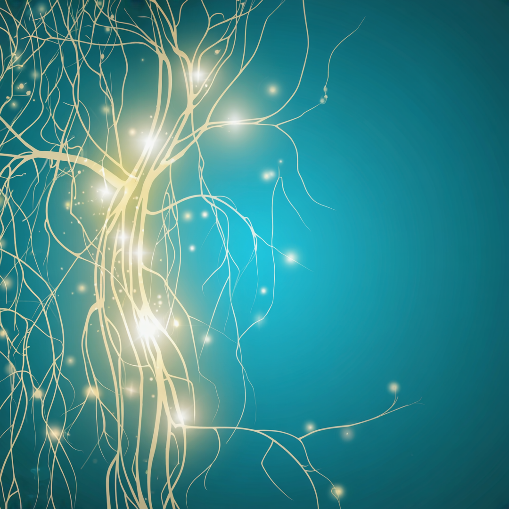
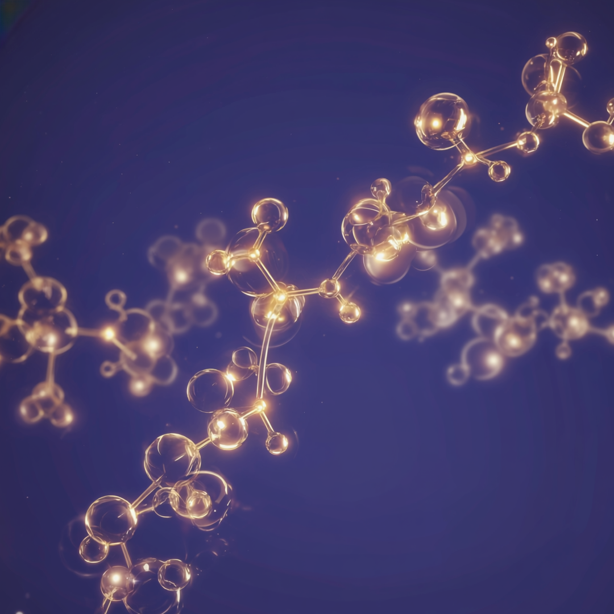

мозгтелоденьгипрактикинаука
Главная · Статьи
Медиатека
Статьи
Разборы исследований, новинки психологии и техники работы с подсознанием. Всё живым языком и с опорой на науку.
Разборы исследований, новинки психологии и техники работы с подсознанием. Всё живым языком и с опорой на науку.
 Мозг
МозгПоловину времени человек думает не о настоящем. И именно там прячется тревога.

ТелоКак хроническая тревога держит тело в режиме борьбы и где находится переключатель.

ДеньгиРешение о деньгах тело принимает раньше головы. Шесть гормонов держат ваш потолок.
 Наука
НаукаНейропластичность работает всю жизнь, но перестройка идёт во сне, а не в момент усилия.
 Практики
ПрактикиПять проверяемых техник мировых авторов, которые меняют жизнь через состояние.
Раздел «Наука» собрал факты с источниками, а программы переводят их в маршрут по дням.
Смотреть программы